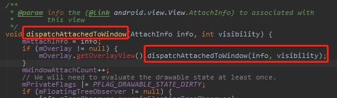
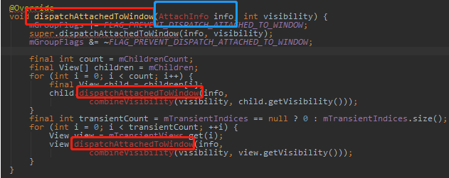

原文连接:https://www.cnblogs.com/andy-songwei/p/12021867.html
前言
转载请声明，转自【https://www.cnblogs.com/andy-songwei/p/12021867.html】，谢谢！
提起View.post()，相信不少童鞋一点都不陌生，它用得最多的有两个功能，使用简便而且实用：
1）在子线程中更新UI。从子线程中切换到主线程更新UI，不需要额外new一个Handler实例来实现。
2）获取View的宽高等属性值。在Activity的onCreate()、onStart()、onResume()等方法中调用View.getWidth()等方法时会返回0，而通过post方法却可以解决这个问题。
本文将由从源码角度分析其原理，在阅读文本之前，希望读者是对Handler的Looper问题有一定了解的，如果不了解请先阅读【朝花夕拾】Handler篇。源码基本基于API-28（即Android 9），只有ActivityThread中Activity启动到调用handleResumeActivity()这一小部分是参考的API-26（即Android 8.0，API-28上这部分代码逻辑有些变化，还没来得及详细研究，但基本机制应该不会变）。
本文的主要内容如下：
篇0.png)
一、在子线程中更新UI
1、在子线程中更新UI使用示例
一般我们通过使用View.post()实现在子线程中更新UI的示例大致如下：
1 private Button mStartBtn;
2 @Override
3 protected void onCreate(Bundle savedInstanceState) {
4 super.onCreate(savedInstanceState);
5 setContentView(R.layout.activity_intent_service);
6 mStartBtn = findViewById(R.id.start);
7 new Thread(new Runnable() {
8 @Override
9 public void run() {
10 mStartBtn.post(new Runnable() {
11 @Override
12 public void run() {
13 //处理一些耗时操作
14 mStartBtn.setText("end");
15 }
16 });
17 }
18 }).start();
19 }第7行开启了一个线程，第10行通过调用post方法，使得在第14行实现了修改自身UI界面的显示（当然，平时使用中不一定只能在onCreate中，这里仅举例而已）。
2、post源码分析
在上述例子中，mStartBtn是如何实现在子线程中通过post来更新UI的呢？我们进入post源码看看。
//=================View.java==========--
1 /**
2 * <p>Causes the Runnable to be added to the message queue.
3 * The runnable will be run on the user interface thread.</p>
4 * ......
5 */
6 public boolean post(Runnable action) {
7 final AttachInfo attachInfo = mAttachInfo;
8 if (attachInfo != null) {
9 return attachInfo.mHandler.post(action); //①
10 }
11 // Postpone the runnable until we know on which thread it needs to run.
12 // Assume that the runnable will be successfully placed after attach.
13 getRunQueue().post(action); //②
14 return true;
15 }第1~5行的注释说，该方法将Runnable添加到消息队列中，该Runnable将在UI线程运行。这就是该方法的作用，添加成功了就会返回true。
上述源码的执行逻辑，关键点在mAttachInfo是否为null，这会导致两种逻辑：
1）mAttachInfo != null，走代码①的逻辑。
2）mAttachInfo == null，走代码②的逻辑。
当前View尚未attach到Window时，整个View体系还没有加载完，mAttachInfo就会为null，表现在Activity中，就是onResume()方法还没有执行完。反之，mAttachInfo就不会为null。这部分内容会在下一篇文章中详细讲解，这里先知道这个结论。
（1）mAttachInfo != null的情况
对于第一种情况，当看到代码①时，应该会窃喜一下，因为看到了老熟人Handler，这就是Handler.post(Runnable)方法，我们再熟悉不过了。这里的Runnable会在哪个线程执行，取决于该Handler实例化时使用的哪个线程的Looper。我们继续跟踪mHandler是在哪里实例化的。
1 //=============View.AttachInfo===============
2 /**
3 * A Handler supplied by a view's {@link android.view.ViewRootImpl}. This
4 * handler can be used to pump events in the UI events queue.
5 */
6 final Handler mHandler;
7 AttachInfo(IWindowSession session, IWindow window, Display display,
8 ViewRootImpl viewRootImpl, Handler handler, Callbacks effectPlayer,
9 Context context) {
10 ......
11 mViewRootImpl = viewRootImpl;
12 mHandler = handler;
13 ......
14 }我们发现mHandler是在实例化AttachInfo时传入的，该实例就是前面post方法第7行的mAttachInfo。在View类中只有一处给它赋值的地方：
//==============View.java==========
1 void dispatchAttachedToWindow(AttachInfo info, int visibility) {
2 mAttachInfo = info;
3 ......
4 }现在的问题就变成了要追踪dispatchAttachedToWindow方法在哪里调用的，即从哪里把AttachInfo传进来的。这里我们先停住，看看第二种情况。
（2）mAttachInfo == null的情况
post源码中第11、12行，对代码②有说明：推迟Runnable，直到我们知道需要它在哪个线程中运行。代码②处，看看getRunQueue()的源码：
1 //=============View.java============
2 /**
3 * Queue of pending runnables. Used to postpone calls to post() until this
4 * view is attached and has a handler.
5 */
6 private HandlerActionQueue mRunQueue;
7 /**
8 * Returns the queue of runnable for this view.
9 * ......
10 */
11 private HandlerActionQueue getRunQueue() {
12 if (mRunQueue == null) {
13 mRunQueue = new HandlerActionQueue();
14 }
15 return mRunQueue;
16 }getRunQueue()是一个单例模式，返回HandlerActionQueue实例mRunQueue。mRunQueue，顾名思义，表示该view的HandlerAction队列，下面会讲到，HandlerAction就是对Runnable的封装，所以实际就是一个Runnable的队列。注释中也提到，它用于推迟post的调用，直到该view被附着到Window并且拥有了一个handler。
HandlerActionQueue的关键代码如下：
1 //============HandlerActionQueue ========
2 /**
3 * Class used to enqueue pending work from Views when no Handler is attached.
4 * ......
5 */
6 public class HandlerActionQueue {
7 private HandlerAction[] mActions;
8 private int mCount;
9
10 public void post(Runnable action) {
11 postDelayed(action, 0);
12 }
13
14 public void postDelayed(Runnable action, long delayMillis) {
15 final HandlerAction handlerAction = new HandlerAction(action, delayMillis);
16
17 synchronized (this) {
18 if (mActions == null) {
19 mActions = new HandlerAction[4];
20 }
21 mActions = GrowingArrayUtils.append(mActions, mCount, handlerAction);
22 mCount++;
23 }
24 }
25 ......
26 public void executeActions(Handler handler) {
27 synchronized (this) {
28 final HandlerAction[] actions = mActions;
29 for (int i = 0, count = mCount; i < count; i++) {
30 final HandlerAction handlerAction = actions[i];
31 handler.postDelayed(handlerAction.action, handlerAction.delay);
32 }
33
34 mActions = null;
35 mCount = 0;
36 }
37 }
38 ......
39 private static class HandlerAction {
40 final Runnable action;
41 final long delay;
42
43 public HandlerAction(Runnable action, long delay) {
44 this.action = action;
45 this.delay = delay;
46 }
47 ......
48 }
49 }正如注释中所说，该类用于在当前view没有handler附属时，将来自View的挂起的作业（就是Runnable）加入到队列中。
当开始执行post()时，实际进入到了第14行的postDelay()中了。第15行中，将Runnable封装成了HandlerAction，在39行可以看到HandlerAction实际上就是对Runnable的封装。第21行作用就是将封装后的Runnable加入到了数组中，具体实现我们不深究了，知道其作用就行，而这个数组就是我们所说的队列。这个类中post调用逻辑还是比较简单的，就不啰嗦了。
代码②处执行的结果就是将post的参数Runnable action添加到View的全局变量mRunQueue中了，这样就将Runnable任务存储下来了。那么这些Runnable在什么时候开始执行呢？我们在View类中搜索一下会发现，mRunQueue的真正使用只有一处：
1 //===========View.java============
2 void dispatchAttachedToWindow(AttachInfo info, int visibility) {
3 ......
4 // Transfer all pending runnables.
5 if (mRunQueue != null) {
6 mRunQueue.executeActions(info.mHandler);
7 mRunQueue = null;
8 }
9 ......
10 onAttachedToWindow();
11 ......
12 }这里我们又到dispatchAttachedToWindow()方法了，第一种情况也是到了这个方法就停下来了。我们看看第6行，传递的参数也是形参AttachInfo info的mHandler。进入到HandlerActionQueue类的executeActions可以看到，这个方法的作用就是通过传进来的Handler，来post掉mRunQueue中存储的所有Runnable，该方法中的逻辑就不多说了，比较简单。这些Runnable最终在哪个线程运行，就看这个Handler了。
到这里为止，两种情况就殊途同归了，最后落脚点都集中到了dispatchAttachedToWindow方法的AttachInfo参数的mHandler属性了。所以现在的任务就是找到哪里调用了这个方法，mHandler到底是使用的哪个线程的Looper。
3、dispatchAttachedToWindow方法的调用
要搞清这个方法的调用问题，对于部分童鞋来说可能会稍微有点复杂，所以这里单独用一小节来分析。当然，不想深入研究的童鞋，直接记住本节最后的结论也是可以的，不影响对post机制的理解。
这里需要对框架部分的代码进行全局搜索，所以需要准备一套系统框架部分的源码，以及源码阅读工具。笔者这里用的是Source Insight来查找的（不会使用童鞋可以学习一下，使用非常广的源码阅读工具，推荐阅读：【工利其器】必会工具之（一）Source Insight篇）。没有源码的童鞋，也可以直接在线查找，直接通过网站的形式来阅读源码（不知道如何操作的，推荐阅读：【安卓本卓】Android系统源码篇之（一）源码获取、源码目录结构及源码阅读工具简介第四点，AndroidXRef，使用非常广）。
全局搜索后的结果如下：
对于这个结果，我们可以首先排除“Boot-image-profile.txt”和“RecyclerView.java”两个文件（原因不需多说吧...如果真的不知道，那就说明还完全没有到阅读这篇文章的时候），跟这个方法调用相关的类就缩小到View，ViewGroup和ViewRootImpl类中。在View.java中与该方法相关的只有如下两处，显然可以排除掉View.java。

ViewRootImpl类中的调用如下：
1 //=============ViewRootImpl.java===========
2 final View.AttachInfo mAttachInfo;
3 ......
4 public ViewRootImpl(Context context, Display display) {
5 ......
6 mAttachInfo = new View.AttachInfo(mWindowSession,
7 mWindow, display, this, mHandler, this, context);
8 ......
9 }
10
11 private void performTraversals() {
12 ......
13 host.dispatchAttachedToWindow(mAttachInfo, 0);
14 ......
15 }
16 ......
17 final ViewRootHandler mHandler = new ViewRootHandler();
18 ......追踪dispatchAttachedToWindow方法的调用，目的是为了找到AttachInfo的实例化，从而找到mHandler的实例化，这段代码中正好就实现了AttachInfo的实例化，看起来有戏，我们先放这里，继续下看ViewGroup类中的调用。

在ViewGroup类中，这个方法出现稍微多一点，但是稍微观察可以发现，根本没有找到AttachInfo实例化的地方，要么直接使用的View类中的mAttachInfo（因为ViewGroup是View的子类），要么就是图一中通过传参得到。而图一的方法，也是重写的View的方法，所以这个AttachInfo info实际也是来自View。这样一来我们也就排除了ViewGroup类中的调用了，原始的调用不在这里面。
通过排除法，最后可以断定，最原始的调用其实就在ViewRootImpl类中。如果研究过View的绘制流程，那么就会清楚View体系的绘制流程measure，layout，draw就是从ViewRootImpl类的performTraversals开始的，然后就是对DecorView下面的View树递归绘制的（如果对View的绘制流程不明白的，推荐阅读我的文章：【朝花夕拾】Android自定义View篇之（一）View绘制流程）。这里的dispatchAttachedToWindow方法也正好从这里开始，递归遍历实现各个子View的attach，中途在层层传递AttachInfo这个对象。当然，我们在前面介绍View.post源码时，就看到过如下的注释：
1 /**
2 * A Handler supplied by a view's {@link android.view.ViewRootImpl}. This
3 * handler can be used to pump events in the UI events queue.
4 */
5 final Handler mHandler;这里已经很明确说到了这个mHandler是ViewRootImpl提供的，我们也可以根据这个线索，来确定我们的推断是正确的。有的人可能会吐槽了，源码都直接给出了这个说明，那为什么还要花这么多精力追踪dispatchAttachedToWindow的调用呢，不是浪费时间吗？答案是：我们是在研究源码及原理，仅仅限于别人的结论是不够的，这是一个成长过程。对于不想研究本节过程的童鞋，记住结论即可。
结论：View中dispatchAttachedToWindow的最初调用，在ViewRootImpl类中；重要参数AttachInfo的实例化，也是在ViewRootImpl类中；所有问题的核心mHandler，也来自ViewRootImpl类中。
4、mHandler所在线程问题分析
通过上一节的分析，现在的核心问题就转化为mHandler的Looper在哪个线程的问题了。在第三节中已经看到mHandler实例化是在ViewRootImpl类实例的时候完成的，且ViewRootHandler类中也没有指定其Looper。所以，我们现在需要搞清楚，ViewRootImpl是在哪里实例化的，那么就清楚了mHandler所在线程问题。
现在追踪ViewRootImpl时会发现，只有如下一个地方直接实例化了。
1 //==========WindowManagerGlobal=========
2 public void addView(View view, ViewGroup.LayoutParams params,
3 Display display, Window parentWindow) {
4 ......
5 ViewRootImpl root;
6 ......
7 root = new ViewRootImpl(view.getContext(), display);
8 ......
9 }到这里，我们就很难继续追踪了，因为调用addView的地方太多了，很难全局搜索，我们先在这里停一会。其实到这个addView方法时，我们会看到里面有很多对View view参数的操作，而addView顾名思义，也是在修改UI。而对UI的修改，只能发生主线程中，否则会报错，这是一个常识问题，所以我们完全可以明确，addView这个方法，就是运行在主线程的。我想，这样去理解，应该是完全没有问题的。但是笔者总感觉还差点什么，总觉得这里有点猜测的味道，所以还想一探究竟，看看这个addView方法是否真的就运行在主线程。当然，如果不愿意继续深入探究的童鞋，记住本节最后的结论也没有问题。
既然现在倒着推导比较困难，那就正着来推，这就需要我们有一定的知识储备了，需要知道Android的主线程，Activity的启动流程，以及Window添加view的相关知识。
我们平时所说的主线程，实际上指的就是ActivityThread这个类，它里面有一个main()函数：
//==========ActivityThread===========
1 public static void main(String[] args) {
2 ......
3 ActivityThread thread = new ActivityThread();
4 ......
5 }看到这里，想必非常亲切了，Java中程序启动的入口函数，到这里就已经进入到Android的主线程了（对于Android的主线程是否就是UI线程这个问题，业内总有些争议，但官方文档很多地方的表述为主线程也就是UI线程，既然如此，我们也没有必要纠结了，把这两者等同，完全没有问题）。在main中，实例了一个ActivityThread()，该类中有如下的代码：
1 //========ActivityThread.java=========
2 ......
3 final H mH = new H();
4 ......
5 private class H extends Handler {
6 public static final int LAUNCH_ACTIVITY = 100;
7 public static final int RESUME_ACTIVITY = 107;
8 public static final int RELAUNCH_ACTIVITY = 126;
9 ......
10 public void handleMessage(Message msg) {
11 switch (msg.what) {
12 case LAUNCH_ACTIVITY:
13 ......
14 case RESUME_ACTIVITY:
15 handleResumeActivity(...)
16 ......
17 case RELAUNCH_ACTIVITY:
18 ......
19 }
20 ......
21 final void handleResumeActivity(...) {
22 ......
23 ViewManager wm = a.getWindowManager();
24 ......
25 wm.addView(decor, l);
26 ......
27 }其中定义了一个Handler H，现在毫无疑问，mH使用的是主线程的Looper了。如果清楚Activity的启动流程，就会知道不同场景启动一个Acitivty时，都会进入到ActivityThread，通过mH来sendMessage，从而直接或间接地在handleMessage回调方法中调用handleResumeActivity(...)，显然，这个方法就运行在主线程中了。
handleResumeActivity(...)的第25行会添加DecorView，即开始添加整个View体系了，我们平时所说的View的绘制流程，就是从这里开始的。这里我们就需要了解ViewManager、WindowManager、WindowManagerImpl和WindowManagerGlobal类之间的关系了，如下所示：
这里用到了系统源码中常用的一种设计模式——桥接模式，调用WindowManagerImpl中的方法时，实际上是由WindowManagerGlobal对应方法来实现的。所以第25行实际执行的就是WindowManagerGlobal的addView方法，我们需要追踪的ViewRootImpl实例化就是在这个方法中完成的，前面的源码显示了这一点。
结论：这里的关键mHandler使用的Looper确实是来自于主线程。
5、mHandler所用Looper线程问题分析状态图
上一节分析mHandler所用Looper所在线程问题，其实就是伴随着启动Activity并绘制整个View的过程，可以得到如下简略流程图：
图1.5.1 View绘制状态图
通过这里的dispatchAttachedToWindow方法，就将mHandler传递到了View.post()这个流程中，从而实现了从子线程中切换到主线程更新UI的功能。
6、小结
到这里，使用View.post方法实现在子线程中更新UI的源码分析就结束了。我们可以看到，实际上底层还是通过Handler从子线程切换到主线程，来实现UI的更新，而整个分析流程其实主要是在做一件事，确定核心Handler使用的是主线程的Looper。
二、使用View.post()获取View的宽高
看到这个标题的时候，您可能会很纳闷，平时工作中不是可以直接通过view.getWidth()（getHeight也一样，后面不赘述）就能获取view的宽高吗，通过View.post()来实现岂不是多此一举？
1、通过post获取宽高的示例演示
对于上述疑惑，咱们先来一个例子：
1 private Button mStartBtn;
2 @Override
3 protected void onCreate(Bundle savedInstanceState) {
4 super.onCreate(savedInstanceState);
5 setContentView(R.layout.activity_intent_service);
6 mStartBtn = findViewById(R.id.start);
7 Log.d(TAG, "width-1=" + mStartBtn.getWidth());
8 mStartBtn.post(new Runnable() { //Runnable ①
9 @Override
10 public void run() {
11 Log.d(TAG, "width-3=" + mStartBtn.getWidth());
12 }
13 });
14 mStartBtn.setOnClickListener(new View.OnClickListener() {
15 @Override
16 public void onClick(View v) {
17 Log.d(TAG, "width-4=" + mStartBtn.getWidth());
18 }
19 });
20 }
21 @Override
22 protected void onResume() {
23 super.onResume();
24 Log.d(TAG, "width-2=" + mStartBtn.getWidth());
25 }运行后得到如下log：
1 12-10 16:16:49.059 18918-18918/com.example.demos D/postDemo: width-1=0
2 12-10 16:16:49.065 18918-18918/com.example.demos D/postDemo: width-2=0
3 12-10 16:16:49.104 18918-18918/com.example.demos D/postDemo: width-3=264
4 12-10 16:16:53.074 18918-18918/com.example.demos D/postDemo: width-4=264看到这份log，对于部分童鞋来说，是不是无法淡定了？第7行和第24行为什么得到的值是0呢？后面我们会详细分析原因，这里咱们先知道会有这个现象，这就是为什么要使用view.post()来获取view宽高的原因了。第8~13行演示了该方法的使用示例，使用起来也是很简单的。
2、view绘制的时机问题
通过上面的示例，我们可以看到在onCreate()和onResume()中直接调用view.getWidth()返回值都是0，但是到了view.post()中以及按钮的onClick()事件中却可以得到正确值。通过这两组值可以推断，view是还没有绘制的，也还没有attach到Window中。前面也分析过post源码，这个post()里面的Runnable是推迟到View attach到Window后才会执行，所以就能得到准确值了。onClick的时机就更晚了，自然也能够得到正常的值。
所以，出现上述log中的现象，是和view的绘制时机有着密切联系的。下面重点分析Activity启动以及View的绘制时机源码。
1 //=======ActivityThread.java=========
2 final void handleResumeActivity(...) {
3 ......
4 //这里会执行onStart/onRestart、onResume方法
5 r = performResumeActivity(token, clearHide, reason);
6 ......
7 //开始添加并绘制view
8 ViewManager wm = a.getWindowManager();
9 wm.addView(decor, l);
10 ......
11 }第5行看字面意思大概也能猜出是和Activity的onResume生命周期方法有关系，实际上这里面会执行onStart/onRestart、onResume这些生命周期方法，下面会详细分析。第8、9行前面我们讲过它的作用，添加DecorView并开始整个View体系的绘制。我们继续看看第5行具体做了什么：
1 //========ActivityThread.java=========
2 public final ActivityClientRecord performResumeActivity(...){
3 ......
4 r.activity.performResume();
5 ......
6 }
7
8 //=========Activity.java========
9 final void performResume() {
10 performRestart();
11 ......
12 mInstrumentation.callActivityOnResume(this);
13 ......
14 }
15
16 final void performRestart() {
17 ......
18 mInstrumentation.callActivityOnRestart(this);
19 ......
20 performStart();
21 ......
22 }
23
24 final void performStart() {
25 ......
26 mInstrumentation.callActivityOnStart(this);
27 ......
28 }r.activity是一个Activity实例，在Launch Activity时创建。这一块代码比较容易理解，实际上就是依次执行了Instrumentation实例的callActivityOnStart \ callActivityOnRestart 、callActivityOnResume方法。
1 //==========Instrumentation.java========
2 public void callActivityOnStart(Activity activity) {
3 activity.onStart();
4 }
5 ......
6 public void callActivityOnRestart(Activity activity) {
7 activity.onRestart();
8 }
9 ......
10 public void callActivityOnResume(Activity activity) {
11 activity.onResume();
12 ......
13 }这三个方法最终调用的就是对应的如下方法：
1 //===========Activity.java========
2 protected void onStart() {
3 ......
4 }
5
6 protected void onReStart() {
7 ......
8 }
9
10 protected void onResume() {
11 ......
12 }这就很熟悉了，我们自定义Activity时需要重写的生命周期方法（我们知道onStart 和onRestart方法只会执行一个，这里没有具体分析什么条件下执行哪一个，这不是本文的重点）都是重写的这些方法。整个流程大致可以表示为如下的状态图：
现在就很明白了，虽然我们平时是在onCreate()方法中调用setView()来加载xml中的布局，但真正将整个view树添加到Window中是在onResume之后的，添加整个view的过程包含了view的绘制流程。这样我们就明白了第一点中，为什么在onCreate()和onResume()方法中直接调用getWidth()得到的值为0了。
3、dispatchAttachedToWindow()发生在view绘制前，如何能获取真实的宽高？
前面在研究dispatchAttachedToWindow()方法执行时机的时候，我们已经明确了它是在ViewRootImpl类中的performTraversals()方法中调用的。但是细心的童鞋会发现如下的情况：
1 //=========ViewRootImpl========代码2.3.1
2 private void performTraversals() {
3 ......
4 host.dispatchAttachedToWindow(mAttachInfo, 0);
5 ......
6 performMeasure(...);
7 ......
8 performLayout(...);
9 ......
10 performDraw();
11 ......
12 }dispatchAttachedToWindow()方法居然发生在View的绘制流程执行之前！不知道这有没有惊到您的下巴呢？我们前面在讲post源码时就讲过，如果view还没有attach到Window，post里面的Runnable会推迟到dispatchAttachedToWindow()方法执行时才会再执行。既然view都还没有绘制，那Runnable中又如何能够获取到真实的宽高呢？
这里先看一下performTraversals()方法的调用流程：
1 //========ViewRootImpl=========代码2.3.2
2 Choreographer mChoreographer;
3
4 public ViewRootImpl(...){
5 ......
6 mChoreographer = Choreographer.getInstance();
7 ......
8 }
9
10 void scheduleTraversals() {
11 ......
12 mChoreographer.postCallback(
13 Choreographer.CALLBACK_TRAVERSAL,
14 mTraversalRunnable, null);
15 ......
16 }
17
18 final class TraversalRunnable implements Runnable { //Runnable ②
19 @Override
20 public void run() {
21 doTraversal();
22 }
23 }
24
25 final TraversalRunnable mTraversalRunnable = new TraversalRunnable();
26
27 void doTraversal() {
28 ......
29 performTraversals();
30 ......
31 }在前文图1.5.1 View绘制状态图中显示了从activity启动到performTraversals()方法执行的大致流程，部分流程的对应代码如上。进入第12行看看其执行逻辑：
1 //=========Choreographer=======代码2.3.3
2 private final FrameHandler mHandler;
3
4 private Choreographer(Looper looper, int vsyncSource) {
5 mLooper = looper;
6 mHandler = new FrameHandler(looper);
7 ......
8 }
9
10 private final class FrameHandler extends Handler {
11 public FrameHandler(Looper looper) {
12 super(looper);
13 }
14
15 @Override
16 public void handleMessage(Message msg) {
17 ......
18 }
19 }
20
21 public void postCallback(int callbackType, Runnable action, Object token) {
22 postCallbackDelayed(callbackType, action, token, 0);
23 }
24
25 public void postCallbackDelayed(int callbackType,
26 Runnable action, Object token, long delayMillis) {
27 ......
28 postCallbackDelayedInternal(callbackType, action, token, delayMillis);
29 }
30
31 private void postCallbackDelayedInternal(int callbackType,
32 Object action, Object token, long delayMillis) {
33 ......
34 Message msg = mHandler.obtainMessage(MSG_DO_SCHEDULE_CALLBACK, action);
35 ......
36 mHandler.sendMessageAtTime(msg, dueTime);
37 }可见代码2.3.2处实际就是封装的一个Handler来执行一个Runnable任务的，而且从代码2.3.3来看，这个封装的FrameHandler mHandler所使用的looper来自于第4行的构造函数。那么这里就需要分析本次使用的Choreographer实例传入的looper了。
代码2.3.2中第6行，继续追踪：
1 //==========Choreographer=========代码2.3.4
2
3 // Thread local storage for the choreographer.
4 private static final ThreadLocal<Choreographer> sThreadInstance =
5 new ThreadLocal<Choreographer>() {
6 @Override
7 protected Choreographer initialValue() {
8 Looper looper = Looper.myLooper();
9 if (looper == null) {
10 throw new IllegalStateException("The current thread must have a looper!")
11 }
12 Choreographer choreographer = new Choreographer(looper, VSYNC_SOURCE_APP);
13 if (looper == Looper.getMainLooper()) {
14 mMainInstance = choreographer;
15 }
16 return choreographer;
17 }
18 };
19
20 /**
21 * Gets the choreographer for the calling thread. Must be called from
22 * a thread that already has a {@link android.os.Looper} associated with it.
23 *
24 * @return The choreographer for this thread.
25 * @throws IllegalStateException if the thread does not have a looper.
26 */
27 public static Choreographer getInstance() {
28 return sThreadInstance.get();
29 }这里用到了ThreadLocal，本文不展开讲它的实现机制，只需要知道本段代码中，它会为每一个线程存储一个对应线程下的Choreographer实例。本次调用Choreographer.getInstance()是在主线程中（前面第一节中已经分析过ViewRootImpl是在主线程中实例化的）完成的，所以此次获取的是主线程下的Choreographer实例，在代码2.3.4中传入的looper就是主线程的looper，所以代码2.3.3中的Handler使用的就是主线程的looper。
分析到这里，就明白了，整个performTraversals()方法，是作为Runnable②的一部分被封装成Message，被加入主线程的MessageQueue中的。当执行到代码2.3.1第3行dispatchAttachedToWindow()时，它会再向主线程的MessageQueue中添加一个封装了本节开头实例中Runnable①的Message。由于Looper.loop()取MessageQueue中的Message执行时是有顺序的，所以Runnable②会先执行完毕，然后才会执行Runnable①，也就是说实际执行中,Runnable①中的view.getWidth()是发生在performMeasure() — performLayout() — performDraw()之后的。
此时，疑惑就解开了，这里我们总结一下本小结的结论：performTraversals()方法中，dispatchAttachedToWindow()所产生的Runnable①，是在view绘制流程结束后才执行的。
4、小结
其实本节主要就是要搞明白一个难点，dispatchAttachedToWindow执行Runnable与View的绘制执行的时间顺序问题，最后落脚点还是到了Handler上面。
结语
本文大部分的篇幅都是在分析Handler问题，由此可见Handler在整个流程中的重要地位。整个分析过程还穿插了ActivityThread、Activity启动、WMS添加view、View的绘制流程等相关知识点，读者可以根据自己掌握的情况选择性地阅读。当然，源码中有很多知识点是环环相扣的，各种知识点都需要平时多积累，希望读者们遇到问题不要轻易放过，这就是一个打怪升级的过程。
【朝花夕拾】Android自定义View篇之（一）View绘制流程
【安卓本卓】Android系统源码篇之（一）源码获取、源码目录结构及源码阅读工具简介
由于笔者经验和水平有限，如有描述不当或不准确的地方，请多多指教，谢谢！